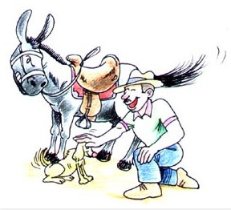

El asno y la perrita faldera

Un granjero fue un día a sus establos a revisar sus bestias de carga: entre ellas se encontraba su asno favorito, el cual siempre estaba bien alimentado y era quien cargaba a su amo. Junto con el granjero venía también su perrita faldera, la cual bailaba a su alrededor, lamía su mano y saltaba alegremente lo mejor que podía.
El granjero revisó su bolso y dio a su perrita un delicioso bocado, y se sentó a dar órdenes a sus empleados. La perrita entonces saltó al regazo de su amo y se quedó ahí, parpadeando sus ojos mientras el amo le acariciaba sus orejas.
El asno celoso de ver aquello, se soltó de su jáquima y comenzó a pararse en dos patas tratando de imitar el baile de la perrita. El amo no podía aguantar la risa, y el asno arrimándose a él, puso sus patas sobre los hombros del granjero intentanto subirse a su regazo.
Los empleados del granjero corrieron inmediatamente con palos y horcas, enseñándole al asno que las toscas actuaciones no son cosa de broma.
Moraleja: No nos dejemos llevar del mal consejo que siempre dan los injustificados celos.